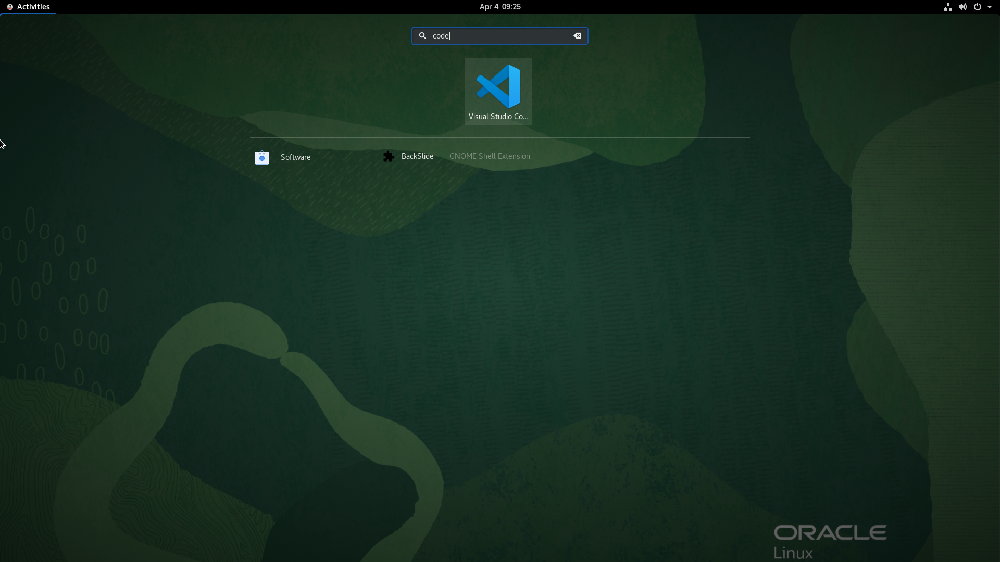

Oracle Linux 8에 Visual Studio Code 설치하기
Oracle Linux 8에 GUI 환경이 구성되지 않은 경우 3.5.4 Oracle Linux 8 on OCI에 VNC 서버 설정하기을 참조하여 먼저 구성후 진행합니다.
-
설치를 위해 루트 유저로 yum repo를 추가합니다.
sudo vi /etc/yum.repos.d/vscode.repo- 추가할 내용
[vscode] name=vscode baseurl=https://packages.microsoft.com/yumrepos/vscode/ enabled=1 gpgcheck=1 gpgkey=https://packages.microsoft.com/keys/microsoft.asc -
Visual Studio Code를 설치합니다.
sudo yum install code- 설치예시
[opc@linux8 ~]$ sudo yum install code vscode 57 MB/s | 34 MB 00:00 Last metadata expiration check: 0:00:07 ago on Tue 04 Apr 2023 09:22:03 AM GMT. Dependencies resolved. =================================================================================================================================================== Package Architecture Version Repository Size =================================================================================================================================================== Installing: code x86_64 1.77.0-1680085658.el7 vscode 120 M Transaction Summary =================================================================================================================================================== Install 1 Package Total download size: 120 M Installed size: 331 M Is this ok [y/N]: y Downloading Packages: code-1.77.0-1680085658.el7.x86_64.rpm 63 MB/s | 120 MB 00:01 --------------------------------------------------------------------------------------------------------------------------------------------------- Total 63 MB/s | 120 MB 00:01 vscode 47 kB/s | 983 B 00:00 Importing GPG key 0xBE1229CF: Userid : "Microsoft (Release signing) <gpgsecurity@microsoft.com>" Fingerprint: BC52 8686 B50D 79E3 39D3 721C EB3E 94AD BE12 29CF From : https://packages.microsoft.com/keys/microsoft.asc Is this ok [y/N]: y Key imported successfully Running transaction check Transaction check succeeded. Running transaction test Transaction test succeeded. Running transaction Preparing : 1/1 Installing : code-1.77.0-1680085658.el7.x86_64 1/1 Running scriptlet: code-1.77.0-1680085658.el7.x86_64 1/1 Verifying : code-1.77.0-1680085658.el7.x86_64 1/1 Installed: code-1.77.0-1680085658.el7.x86_64 Complete! [opc@linux8 ~]$ -
설치된 VS Code를 실행합니다.

참고
이 글은 개인으로서, 개인의 시간을 할애하여 작성된 글입니다. 글의 내용에 오류가 있을 수 있으며, 글 속의 의견은 개인적인 의견입니다.